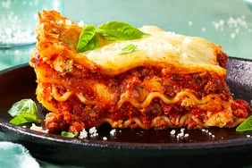

Lasagna Recipe

A hearty and flavorful lasagna with layers of meat sauce, creamy ricotta, and melted mozzarella.
Ingredients:
- Ground Beef
- Italian Sausage
- Onion, chopped
- Garlic, minced
- Crushed Tomatoes
- Tomato Paste
- Tomato Sauce
- Water
- Sugar
- Basil
- Fennel Seeds
- Italian Seasoning
- Salt
- Black Pepper
- Fresh Parsley, chopped
- Lasagna Noodles
- Ricotta Cheese
- Egg
- Mozzarella Cheese, grated
- Parmesan Cheese, grated
Recipe & Cooking Overview:
Lasagna is a beloved classic Italian dish known for its layers of rich meat sauce, creamy ricotta, and gooey melted cheese, all nestled between sheets of tender pasta. Preparing lasagna involves several steps that, when followed methodically, result in a delicious and hearty meal. This guide will walk you through the process, from preparing the savory meat sauce to assembling the layers and baking to perfection.
- Prepare the Meat Sauce: Cook ground beef and Italian sausage with onions and garlic, then simmer with tomatoes and spices to develop a rich, flavorful sauce.
- Cook the Noodles: Boil lasagna noodles until al dente, then rinse with cold water to prevent sticking.
- Mix the Cheese Filling: Combine ricotta cheese with egg and fresh parsley to create a creamy layer that will add richness to the lasagna.
- Assemble the Lasagna: Layer the meat sauce, noodles, ricotta mixture, and shredded cheeses in a baking dish, repeating the layers to build up the lasagna.
- Bake: Cover and bake the assembled lasagna, then uncover to brown the top, resulting in a bubbly, golden-brown finish.
- Serve and Enjoy: Allow the lasagna to cool slightly before serving to ensure clean slices and a delicious dining experience.
Instructions:
- Prepare Meat Sauce:
- Cook ground beef, sausage, onion, and garlic until browned.
- Drain fat.
- Add tomatoes (crushed, paste, sauce) and water.
- Stir in sugar, basil, fennel, Italian seasoning, salt, pepper, and parsley.
- Simmer for 1.5 hours.
- Cook Noodles:
- Boil lasagna noodles in salted water until al dente.
- Drain and rinse with cold water.
- Mix Cheese Filling:
- Combine ricotta cheese with egg and parsley in a bowl.
Home